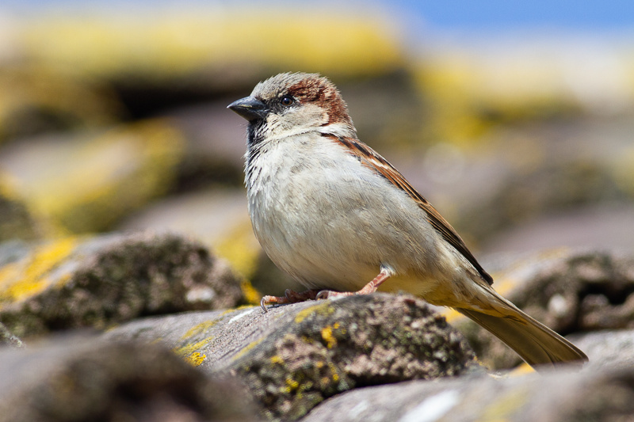

Noord-Holland
Huismusonderzoek in Noord-Holland
Van Amsterdamse grachtenpanden tot Haarlemse volksbuurten: de huismus is overal in Noord-Holland te vinden. Bij renovatie of verduurzaming is huismusonderzoek vaak wettelijk verplicht. Van Der Ham Ecologie voert deskundig huismusonderzoek uit door heel Noord-Holland.
Vrijblijvend overleggen
Huismussen in Noord-Holland
Noord-Holland kent een rijke huismussenpopulatie in zowel stedelijk als landelijk gebied. Ontdek waarom onderzoek verplicht is.
In Noord-Holland komen huismussen talrijk voor in Amsterdam, Haarlem, Alkmaar, Hoorn, Hilversum en Zaanstad. De vele naoorlogse wijken en historische panden met rieten daken en dakpannen bieden ideale nestgelegenheid.
Ook in de kop van Noord-Holland (Schagen, Den Helder) en op Texel komt de huismus voor. Veel boerderijen, schuren en dorpse bebouwing bieden nestruimte en jaarrond beschutting.
Onze rapportages voldoen aan de eisen van de omgevingsdiensten in Noord-Holland, zoals de Omgevingsdienst Noordzeekanaalgebied, de Omgevingsdienst IJmond en de Omgevingsdienst Noord-Holland Noord.
Wat onderzoeken we?
Nestlocaties, jaarrond beschermde nesten en functioneel leefgebied (foerageergebied, schuilplekken) rondom uw projectlocatie.
Wanneer uitvoeren?
Huismusonderzoek vindt plaats in het voorjaar: twee veldbezoeken tussen 1 april en 15 mei, of vier veldbezoeken in de verlengde periode van 10 maart tot 20 juni. Vraag tijdig aan, want buiten deze periode is onderzoek niet mogelijk.
Huismusvriendelijk bouwen in Noord-Holland
Als uit ons onderzoek blijkt dat er huismussen aanwezig zijn, betekent dat niet het einde van uw project. Met de juiste mitigerende maatregelen kan het gewoon doorgaan.
Mussenkasten
Inbouwkasten (Vivara Pro of gelijkwaardig) als vervangende nestgelegenheid
Groenbehoud
Behoud van dichte struiken en hagen als schuilplek en foerageergebied
Buiten broedseizoen
Werkzaamheden plannen buiten het broedseizoen (half maart tot half augustus)
Huismusonderzoek nodig in Noord-Holland?
Vraag direct een offerte aan. Let op: het veldwerk kan alleen in het voorjaar, van 1 april tot 15 mei (twee bezoeken) of van 10 maart tot 20 juni (vier bezoeken).
Huismusonderzoek in andere provincies
Vragen over huismusonderzoek in Noord-Holland?
Mail of bel gerust. Samen bepalen we wat er nodig is voor uw situatie.